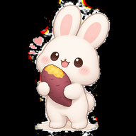

<!doctype html><html lang="ko"><meta charset="utf-8"><meta name="viewport" content="width=device-width,initial-scale=1,viewport-fit=cover"><meta name="theme-color" content="#faf8f4"><title>잠시 쉬어가는 중 · 토끼와 구마</title><style>body{background:#faf8f4;color:#66576f;font:16px system-ui;display:grid;place-items:center;min-height:90dvh;margin:0}main{text-align:center;padding:32px;max-width:340px}img{width:100px;border-radius:24px}h1{font-size:22px}p{color:#98899f;font-size:14px;line-height:1.8}button{background:#88759b;color:white;border:0;border-radius:14px;padding:14px 24px;font:inherit}</style><main><h1>연결되면 다시 만나요</h1><p>인터넷 연결이 잠시 끊겼어요.<br>일정과 신청은 연결된 뒤 확인하고 저장할 수 있어요.</p><button onclick="location.reload()">다시 연결하기</button></main></html>
